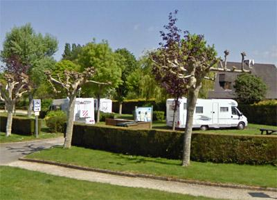

ASN = Aire de services avec stationnement nuit possible de :
SAINS
(N° 684)
Accès/adresse :
Rue du Puits Rimoult
35610 SAINS
35610 SAINS
Latitude : (Nord) 48.55265° Décimaux ou 48° 33′ 9′′
Longitude : (Ouest) -1.58613° Décimaux ou -1° 35′ 10′′
Tarif : 2015
Stationnement : 5 €
Services gratuits
Type de borne : Autre
Services :


Autres informations :
Ouverte toute l'année
5 emplacements
Tel : +33(0)299 485 734
Le 05/01/2015 par Brian

Le 04/06/2013 par lelito
Le 31/07/2005 par Didijac57
de
Derek Uzzell
le 25/04/2013 :
16/04/2013 La borne est en très mauvais état. Pas d'eau disponible et l'égout pour vidanger les WCs est bloqué complètement. Aussi difficile de vidanger les eaux usées. Pour les services preferez (N ° 14934) le parking Intermarché à Ville Chérel, Pleine Fougères.
16/04/2013 La borne est en très mauvais état. Pas d'eau disponible et l'égout pour vidanger les WCs est bloqué complètement. Aussi difficile de vidanger les eaux usées. Pour les services preferez (N ° 14934) le parking Intermarché à Ville Chérel, Pleine Fougères.
de
Pelot
le 14/06/2011 :
Halte sur la route du retour de Bretagne et bien sympathique ... Quel calme !!!
Aire très agréable avec huit emplacements stabilisés...certains semblent un peu courts pour les camping car de plus de 7m
La borne a mal vieillie (comme beaucoup de bornes industrielles)mais délivre de l'eau et les vidanges sont possibles (ce qui est l'indispensable)avec un tuyau.
Pas vu l'agent encaisseur de la ville, nous avons déposé nos 5 euros dans la boite à lettre de la mairie toute proche où il y a aussi des toilettes publiques
Coordonnées GPS rectifiés
Halte sur la route du retour de Bretagne et bien sympathique ... Quel calme !!!
Aire très agréable avec huit emplacements stabilisés...certains semblent un peu courts pour les camping car de plus de 7m
La borne a mal vieillie (comme beaucoup de bornes industrielles)mais délivre de l'eau et les vidanges sont possibles (ce qui est l'indispensable)avec un tuyau.
Pas vu l'agent encaisseur de la ville, nous avons déposé nos 5 euros dans la boite à lettre de la mairie toute proche où il y a aussi des toilettes publiques
Coordonnées GPS rectifiés
de
Jean-Claude
le 15/06/2010 :
Pour une nuit ca doit aller, mais c'est 5€ maintenant. "Somme prélevée par un agent qui passe au cours de la matinée" dit un écriteau. Système de vidange pas bien accessible. §
Pour une nuit ca doit aller, mais c'est 5€ maintenant. "Somme prélevée par un agent qui passe au cours de la matinée" dit un écriteau. Système de vidange pas bien accessible. §
de
laurent59
le 03/08/2009 :
Bonjour. Confirmation des commentaires précédents: aire agréable, pas de commerces et borne HS.
Bonjour. Confirmation des commentaires précédents: aire agréable, pas de commerces et borne HS.
de
chantal et jean-luc 28
le 24/04/2008 :
Aire agréable et verdoyante dans ce village sans commerce, idéale pour y passer une nuit au calme. Dommage que la borne soit toujours HS.
Aire agréable et verdoyante dans ce village sans commerce, idéale pour y passer une nuit au calme. Dommage que la borne soit toujours HS.
de
pascal l
le 21/08/2007 :
Félicitations à ce village sans commerce, mais avec des balades balisées agréables, à deux pas du Mont Saint Michel et d'autres belles villes pour cette belle aire, calme et verdoyante. Tout marche bien, et ... gratuitement.
Les gens du village en plus adorent les camping-caristes. L'idéal : se poser là et sortir à moto visiter la région.
Félicitations à ce village sans commerce, mais avec des balades balisées agréables, à deux pas du Mont Saint Michel et d'autres belles villes pour cette belle aire, calme et verdoyante. Tout marche bien, et ... gratuitement.
Les gens du village en plus adorent les camping-caristes. L'idéal : se poser là et sortir à moto visiter la région.
de
GUTTON
le 17/08/2006 :
L'aire est vraiment sympa et au calme. Par contre la borne était tjs cassée le 8 aout. Dommage qu'il n'y ait plus le moindre commerce
L'aire est vraiment sympa et au calme. Par contre la borne était tjs cassée le 8 aout. Dommage qu'il n'y ait plus le moindre commerce
de
Alexander Blasius
le 08/06/2006 :
La borne est encore défectueuse, mais la place est très jolie et calme.
La borne est encore défectueuse, mais la place est très jolie et calme.
de
JC CABON
le 04/05/2006 :
Malheureusement la borne n'est toujours pas réparée! Vandalisme idiot.
Sains : belle petite commune qui offre un bien bel équipement! Dommage qu'elle ne dispose plus de commerces!
Malheureusement la borne n'est toujours pas réparée! Vandalisme idiot.
Sains : belle petite commune qui offre un bien bel équipement! Dommage qu'elle ne dispose plus de commerces!
de
Le borgne
le 23/04/2006 :
La borne a été vandalisée, toujours 7 emplacements et le seul restaurant est à vendre!
La borne a été vandalisée, toujours 7 emplacements et le seul restaurant est à vendre!